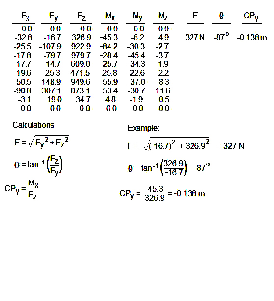
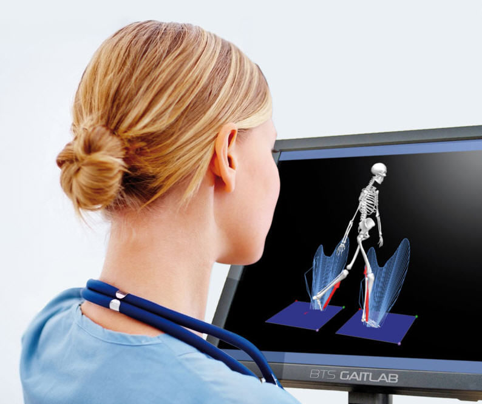
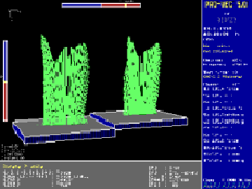
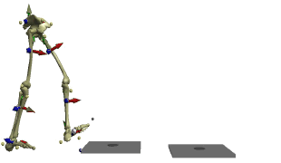
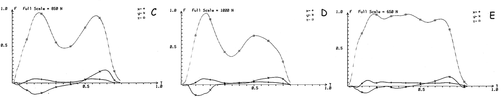

Force Plate Lab
Introduction:
An important aspect of the biomechanics of human motion is the measurement of external forces acting on the human body. The most basic of these external forces is the ground reaction force can be resolved into three orthogonal or rectangular components: vertical, anterior-posterior, and medial-lateral. A force plate or force platform is an instrument that is used to measure the ground reaction forces generated by a body standing or moving across the surface. The device is often placed in the floor or another surface and is used in many biomechanics situations such as gait analysis, sport and impact situations as well product testing and medical diagnoses. A force plate is required in conjunction with video in order to obtain joint kinetics (see the "Linked Segment Mechanics Lecture" ).

A force plate
is a three dimensional device. Although there are different
types of force plates, the basic principle of each is that transducers
are placed in the four corners that measure strain due loads placed on
the surface. The diagram to the right shows how the corner transducers
can detect the amount of force applied in three orthogonal directions.
Fz is the total vertical force and Fx and Fy are two
horizontal forces due to friction. A vertical force that is
applied to the center of the plate would produce an equal amount of
strain on each corner. If the force is applied at a point
other than the center, the corner transducers will register unequal
strains and the plate can measure the tendency to twist the plate about
the X and Y axes. The device therefore produces an output of the three
orthogonal forces (Fx, Fy, and Fz) as well as the three orthogonal
moments (Mx, My,
and Mz). For more on the three dimensional
forces and moments, see
the "3-D
Lectures"
.
Whenever an object contacts the plate, the plate resolves that contact
into a single reaction force with a point of application. The
point of application is called the "center of pressure" (CP).
Center of Pressure:
In the diagram above, the center of the force plate is indicated by the intersection of the two red dotted lines. We can see that the force is applied at a location other than the center and if we look at the Fz component, we can see that this off-center application tends to twist the plate about the X and Y axes.

The force plate does not measure the center of pressure directly - it is calculated by dividing the moment by the vertical force. The diagram to the right shows a two-dimensional view of a force plate sunk into the floor. The resultant ground reaction force (F) has a CP which is 10cm from the center of the plate in the positive Y direction. The force plate measures the vertical force (Fz) and the moment of force about the X axis which is coming directly out of the page. The horizontal component (Fy) does not contribute to Mx and Mx is due to the vertical force times the perpendicular distance from the center of the plate (CPy). For example, if Fz = 500 N and Mx = 50 N.m, the formula on the left shows that CPy = 50/500 = 0.10m or 10 cm. Similarly, if the applied force is off center in the X direction, the formula on the right shows how CPx is calculated from My and Fz.
In a static position, the center of gravity of the body must be directly above the CP. In a dynamic movement, the center of gravity is rarely directly above the CP and the CP is continually moving.
Procedures:
Follow the handout on setting up the force plate to collect data.
- walk normally across the plate and save the data
- jog across the plate and save the data
- print out the vertical and horizontal forces as well as the moments
- calculate the center of pressure
- plot the orthographic vector profile.


The graphs on the left show a typical worksheet on which to plot your orthographic vector profile. The data on the right show a typical output for a walking trial. The forces have units of Newtons and the moments are Newton-meters. The CPx has units of meters which are multiplied by 100 to yield centimeters for the plot.
Your calculations involve resolving Fz and Fy into a single resultant force vector with direction (theta) and point of application (CPx). The figure below shows the orthographic vector profile drawn to scale with 1 cm equal to 100 N of force for the above data. The force plate was set at 10 samples per second which is lower than usual so you don't have to perform very many hand calculations. Typically the sampling rate is 60 samples per second to match a video analysis or even higher for running or other activities.



Typical gait analysis uses two force plates because the double support phase has both feet on the ground at the same time. The figure to the right shows a three dimensional orthographic vector profiles of both feet during of a walking stride.

Assessment of Gait:
Podiatrists evaluate walking (gait) patterns before prescribing a shoe orthotic. Prosthetists perform gait analysis to evaluate the effectiveness of an artificial limb. In this section, you will attempt to match the force plate record to the movement. The movements are listed on the left. See if you can match each of the five movements with the letter of the appropriate force plate trace shown on the right.

1) Healthy walk in the positive Y direction;
2) Healthy walk in the negative Y direction;
3) Weak knee;
4) Stiff knee;
5) Drop Foot.

Force Plate vs Pressure Sensors:
The force plate yields a single resultant force vector applied to the plate. Sometimes the clinician would like to know how the forces are distributed within the contact area. In such cases, a pressure pad is used or pressure sensors in a shoe insert are used. These pressure sensors are similar to an array of tiny force plates that measure vertical forces based on the pressure applied to a very small area.
The figures below show a plot and a dynamic plot of the force distributions as a person walked across a pressure pad.